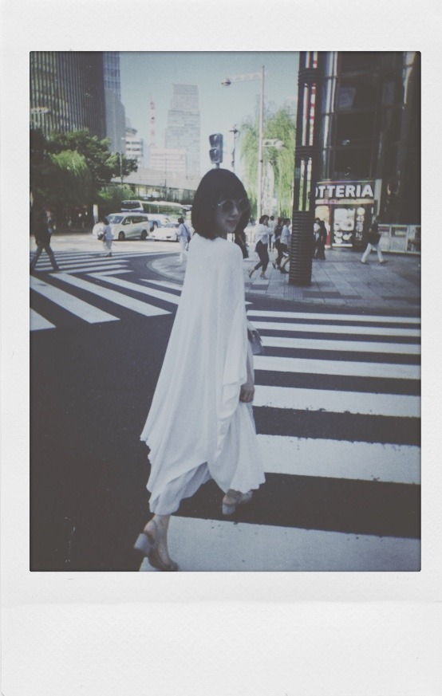

2018/0821Tue残してく。
突然ですが
プライベートの目標を発表します
それは...
いろんな温泉に行くこと！
お母さんや友達とたまに行くけどまだ未開拓な温泉地がたくさんあるから家族で行けたらいいな〜
おすすめの場所があったら教えて下さい！

お休みの日はメイクしない時とする時があって
(気分なのですが) この日はすっぴんdayでした
なんか、さっぱりしてる〜
この間自分でメイクをした日に松村さんに
まぶたキラキラだねー
撮影終わりかと思ったよーって言ってもらえて
嬉しかったな♡
アイシャドウは全体と二重幅の2色塗りがマイルールです！
近況
銀魂2を絢音とお仕事終わりに観てきました^^
始まってすぐからずっとお腹抱えて笑ってました...
本当に面白い！ムロツヨシさんと佐藤二郎さんは50回目のファーストキスに続き安定にドツボでした。苦しかったです、笑
ストーリーも涙ありで魅入りましたし
学生時代にアニメは少し観ていたのですが
全話制覇！では無かったので内容がちゃんと分かるか不安でした。でもわたしみたいに銀魂あまり詳しくない！という方でも100%楽しめますので
ぜひに。わたしはこれを機にアニメも最初からちゃんと観始めようと思いました...
橋本環奈さんはもちろんずっとかわいいけれど話し方、声が癒しすぎました
神宮ライブに来てくださっててトロッコから橋本環奈さんを見つけた時、えっっやはり凄くかわいいっってなったなぁ
あとは銀魂だとアニメの時から器用でさらっと頭のいい沖田総悟さんが気になっていたのですが(胸の内に秘めた熱意や根性が時たま男らしくてギャップです)
実写版映画でのあの電車のシーン...
破壊力が...すごくて。
吉沢亮さんの目のお芝居にも引き込まれました
殺意と決意が入り混ざっていて格好いいだけでは済まされず、わたしの語彙力が乏しくて申し訳ないです
絢音もすっごく楽しかったって言っていてね、
終わった後あーだこーだ焼肉を食べながら話しました。笑
映画 や 美術館 など
楽しみながら自分の身になるものや蓄えられるものを見つけられる趣味があることを嬉しく思います


9月のガールズアワードは
お仕事の都合で出られなくなりました。
今まで出させていただいていて毎回
楽しみにしていたので残念ですが...
わたしもお仕事、頑張ります。
そしてメンバーのランウェイを
携帯越しに見守っています。
そして...
乃木坂46
結成7周年 おめでとうございます
ありがとうございます 。笑
皆さんの温かく力強い支えがありきの私達です。
感謝の言葉だけでは伝えきれません
これからも乃木坂46の変化を成長を、一緒に楽しんでいただけたら嬉しいです
皆さんが大好き^^

では！
2018/08/21 18:48
コメント(850)
名古屋でのライブ2日間お疲れ様でございました
体調悪い中ラジラーもお疲れ様でございます
サブ地元いかがでしたか？
おじや以外にも少し名古屋めし食べれましたかね…
なかなか休みがないと思いますが、身体お気をつけください
休める時は映画見ながらゆっくり休んで下さいね
体調悪い中ラジラーもお疲れ様でございます
サブ地元いかがでしたか？
おじや以外にも少し名古屋めし食べれましたかね…
なかなか休みがないと思いますが、身体お気をつけください
休める時は映画見ながらゆっくり休んで下さいね
こんにちは
名古屋ライブ大変お疲れ様でした！！
体調が悪い中でのパフォーマンスと更に、
らじらー！までもとっても大変でしたね☆
でも、とっても面白かったです！！
俺もシュワちゃん目指して頑張りますよ♡
休める時は、ゆっくりと休んで下さいね☺
名古屋ライブ大変お疲れ様でした！！
体調が悪い中でのパフォーマンスと更に、
らじらー！までもとっても大変でしたね☆
でも、とっても面白かったです！！
俺もシュワちゃん目指して頑張りますよ♡
休める時は、ゆっくりと休んで下さいね☺
みおな､名古屋ツアーお疲れ様でした｡ 体調のおもわしくないまま､頑張ったね｡ すっごいよ｡
まだツアーも途中だからくれぐれも体に気をつけて❗
体調良くなったら温泉行ってね｡ 温泉行くなら､北関東の群馬が沢山あるよ｡
有名なところで､ 草津温泉 水上温泉 四万温泉 伊香保温泉｡ まだまだたくさんある温泉県だよ～｡
まだツアーも途中だからくれぐれも体に気をつけて❗
体調良くなったら温泉行ってね｡ 温泉行くなら､北関東の群馬が沢山あるよ｡
有名なところで､ 草津温泉 水上温泉 四万温泉 伊香保温泉｡ まだまだたくさんある温泉県だよ～｡
名古屋ライブお疲れ様！！
サブ地元でもあり念願の場所だったナゴヤドーム。思い入れの強さはモバメからも伝わってきました。
開演直後はまだ大丈夫かな?って心配しながら見ちゃってたのが本音です。
最後まで笑顔でステージに立ってくれてありがとう
1人1人の声が集まったファンの一体感もナゴヤドームの思い出として届いていたら嬉しいなって思います。
扁桃腺早く治りますように。
未央奈の感想も聞きたい!
そして初名古屋だったから色々食べたよ
手羽先が美味しかった！
ひつまぶしだけ食べそびれたから今度こそは、
次の日は丸デブとマルマンさんに
開店丁度に着いたからあまり待たずに入れました。
驚いたのはコスパの良さと大正時代から続いてること
何代目なんだろう、おばちゃんもおじちゃんも優しそうで素敵でした。おばちゃんのタレ目が可愛い笑
長蛇の列が出来ていたのもあるかもしれないけど、お盆にこぼれた汁は気にしない、胡椒の蓋は取ってある、お会計はポケットで、テーブルの椅子が1つあいたら次のお客さんを入れてあげるっていうお客さん最優先のポリシーみたいなのを感じてこれが大正時代から続いてる所以の1つでもあるのかなぁって感じた。
味も優しくて、汁は止まらないぐらい美味しかった！
次はワンタン食べるね
マルマンまで10～15分ぐらい歩いたら割と汗が出て自転車がベストだな、と。
ハムカツ65円安すぎ！店員の奥さんも気さくで話しやすかった
また岐阜に来た時は郡上八幡とか自然を満喫できる所まで行ってみたいな～
青森出身として同じ田舎の似た空気があって好きでした。
総括とても楽しかった、またいつか行きたいです。
来週の宮城公演は万全の状態で望めることを祈ってます。
見に行けないですが( .. )
個人的には夏のライブも終了し、もう暫しで22歳になるという節目なので気持ちを新たに引き締めて日々頑張ります！
名古屋公演本当にお疲れ様٩( ᐛ )و
サブ地元でもあり念願の場所だったナゴヤドーム。思い入れの強さはモバメからも伝わってきました。
開演直後はまだ大丈夫かな?って心配しながら見ちゃってたのが本音です。
最後まで笑顔でステージに立ってくれてありがとう
1人1人の声が集まったファンの一体感もナゴヤドームの思い出として届いていたら嬉しいなって思います。
扁桃腺早く治りますように。
未央奈の感想も聞きたい!
そして初名古屋だったから色々食べたよ
手羽先が美味しかった！
ひつまぶしだけ食べそびれたから今度こそは、
次の日は丸デブとマルマンさんに
開店丁度に着いたからあまり待たずに入れました。
驚いたのはコスパの良さと大正時代から続いてること
何代目なんだろう、おばちゃんもおじちゃんも優しそうで素敵でした。おばちゃんのタレ目が可愛い笑
長蛇の列が出来ていたのもあるかもしれないけど、お盆にこぼれた汁は気にしない、胡椒の蓋は取ってある、お会計はポケットで、テーブルの椅子が1つあいたら次のお客さんを入れてあげるっていうお客さん最優先のポリシーみたいなのを感じてこれが大正時代から続いてる所以の1つでもあるのかなぁって感じた。
味も優しくて、汁は止まらないぐらい美味しかった！
次はワンタン食べるね
マルマンまで10～15分ぐらい歩いたら割と汗が出て自転車がベストだな、と。
ハムカツ65円安すぎ！店員の奥さんも気さくで話しやすかった
また岐阜に来た時は郡上八幡とか自然を満喫できる所まで行ってみたいな～
青森出身として同じ田舎の似た空気があって好きでした。
総括とても楽しかった、またいつか行きたいです。
来週の宮城公演は万全の状態で望めることを祈ってます。
見に行けないですが( .. )
個人的には夏のライブも終了し、もう暫しで22歳になるという節目なので気持ちを新たに引き締めて日々頑張ります！
名古屋公演本当にお疲れ様٩( ᐛ )و
無事に立てれて良かった。
ナゴヤドームライブ2日目お疲れ様でした。
ただ、熱は下がったのかな？出来るだけ休養してね。
ナゴヤドームライブ2日目お疲れ様でした。
ただ、熱は下がったのかな？出来るだけ休養してね。
やぁ(・∀・)ノ未央奈ちゃん♡こんばんは！
りょーへー(R.N.イナダウアーびーむ)だよ♪
メールありがとう！今回の名古屋ライブは、万全な状態じゃない中でも、何とか出られたって感じなんだね！改めてにはなるけど、本当にお疲れ様！！！今は、とにかく体調が良くなるように休むんだよ！早く良くなりますよーにっ！お大事に…！
今日は、サークルの発表会に向けての打ち合わせをずーっとやってたよ！部屋にこもって、パソコンをかたかたしたり、打合せしたり…！素敵なものが出来上がるといいなぁ！
#毎日コメント
#今日もお疲れ様
#最近は
#寝落ちすることが多い
#良くないね
#気を付けなきゃ
#帰ったら
#ハンバーグらしい
#たのしみだなぁ
#明日も楽しみおな♡
#おやすみおな＼(^.^)／
りょーへー(R.N.イナダウアーびーむ)だよ♪
メールありがとう！今回の名古屋ライブは、万全な状態じゃない中でも、何とか出られたって感じなんだね！改めてにはなるけど、本当にお疲れ様！！！今は、とにかく体調が良くなるように休むんだよ！早く良くなりますよーにっ！お大事に…！
今日は、サークルの発表会に向けての打ち合わせをずーっとやってたよ！部屋にこもって、パソコンをかたかたしたり、打合せしたり…！素敵なものが出来上がるといいなぁ！
#毎日コメント
#今日もお疲れ様
#最近は
#寝落ちすることが多い
#良くないね
#気を付けなきゃ
#帰ったら
#ハンバーグらしい
#たのしみだなぁ
#明日も楽しみおな♡
#おやすみおな＼(^.^)／
モバメ見ました
どんなに体調が優れなかったとしても
ご自分の信念を貫かれた堀ちゃんの心意気
仕事人として尊敬します(>_<)ヽ
ただ、無理をされたことでしょう
休める時にはどうか身体を労ってあげてくださいね!!
素敵な笑顔をまた見せて欲しいので
どんなに体調が優れなかったとしても
ご自分の信念を貫かれた堀ちゃんの心意気
仕事人として尊敬します(>_<)ヽ
ただ、無理をされたことでしょう
休める時にはどうか身体を労ってあげてくださいね!!
素敵な笑顔をまた見せて欲しいので
堀さん、こんばんは。
無事ライブ終えられたみたいで良かったです。
今思えばうなぎの夢は、乃木恋リアルの設定がひつまぶし屋と鰻の恋だったとかでもない限り、一人で背負い込んで頑張りすぎなことを暗示してたんじゃないでしょうか。
これからも仕事はひっきりなしにやってくると思うので、何とか体力回復してくださいね。
あと乃木坂工事中、面白かったです。帽子といい樋口さんのネックレスといい、日村さんに急な成長期きたのかなって思わせる効果があって、常に成長著しいエポックメイカー感を醸し出すのにうってつけだなと思いました。
いつも頑張ってくれてありがとうございます。いつも応援してます。
無事ライブ終えられたみたいで良かったです。
今思えばうなぎの夢は、乃木恋リアルの設定がひつまぶし屋と鰻の恋だったとかでもない限り、一人で背負い込んで頑張りすぎなことを暗示してたんじゃないでしょうか。
これからも仕事はひっきりなしにやってくると思うので、何とか体力回復してくださいね。
あと乃木坂工事中、面白かったです。帽子といい樋口さんのネックレスといい、日村さんに急な成長期きたのかなって思わせる効果があって、常に成長著しいエポックメイカー感を醸し出すのにうってつけだなと思いました。
いつも頑張ってくれてありがとうございます。いつも応援してます。
ナゴヤドーム公演行きました(_Д_)素敵な会場けんぴゅーヾ(=ﾟ･ﾟ=)ﾉﾆｬﾝ♪堀殿のご活躍ウキウキとまらんぜでうれぴーぽー(o￣◎￣)oバブゥ♡
未央奈ちゃんお疲れ様です！ありがとうございます！楽しみにしてます‼頑張ります‼頑張って下さい！お疲れ様です。
未央奈ちゃん、ひろっしーです！コメント投稿497回目です！
前回はモバメの感想を書きました！
時間→「No.744 2018年8月27日 23:16」
モバメ毎日ありがとうございます！
改めて名古屋ライブお疲れ様でした！
笑顔で終えられたと知り安心しました！
前回も書きましたが、扁桃腺が腫れていて熱も出ている状態で本当によく頑張りましたね！
これも全て未央奈ちゃんの「ライブを最後までやりきるぞ！」という強い気持ちがあったからだと思います！素晴らしい！さすがですね！
「皆さんの声援に支えられて…」なんて言って頂きありがとうございます！そんなそんな(汗)こちらこそ未央奈ちゃんの言葉にいつも励まされています！お互い様ですよ～！
今日の「レコメン！」も勿論聴きますね！
毎週未央奈ちゃんの生の声が聴けるって幸せ！
ここまで読んで頂きありがとうございました！
毎日お仕事お疲れ様です！体調にはくれぐれも気を付けて頑張ってくださいね！
ではでは！
前回はモバメの感想を書きました！
時間→「No.744 2018年8月27日 23:16」
モバメ毎日ありがとうございます！
改めて名古屋ライブお疲れ様でした！
笑顔で終えられたと知り安心しました！
前回も書きましたが、扁桃腺が腫れていて熱も出ている状態で本当によく頑張りましたね！
これも全て未央奈ちゃんの「ライブを最後までやりきるぞ！」という強い気持ちがあったからだと思います！素晴らしい！さすがですね！
「皆さんの声援に支えられて…」なんて言って頂きありがとうございます！そんなそんな(汗)こちらこそ未央奈ちゃんの言葉にいつも励まされています！お互い様ですよ～！
今日の「レコメン！」も勿論聴きますね！
毎週未央奈ちゃんの生の声が聴けるって幸せ！
ここまで読んで頂きありがとうございました！
毎日お仕事お疲れ様です！体調にはくれぐれも気を付けて頑張ってくださいね！
ではでは！
黒川温泉オススメだよ！
チャァオ～～!☆彡
ミオッキ～～～～⤴⤴❕❤❤❤❤❤❤❤笑顔
こんにちは～～～⤴⤴⤴❕❤❤❤❤❤❤❤笑顔
２日間の名古屋ライブお疲れsummerでしたぁ～～～⤴⤴❕❤❤❤❤❤❤❤❤❤❤笑顔
ファンと一緒に、いっぱいと楽しめましたぁ～～～⤴⤴⤴❕❔❤❤❤❤❤❤❤❤笑顔
美味しい物も、いっぱい食べましたぁ～～⤴⤴⤴❕❔❤❤❤❤❤❤❤笑顔
ライブが終わってから～～⤴⤴
ゆっくりどこかの温泉あたりで身体を休めてますかぁ～～⤴⤴⤴❕❔❤❤❤❤❤❤❤❤❤笑顔
いっぱいリフレッシュしてねぇ～～⤴⤴❕❤❤❤❤❤❤❤❤笑顔
また次の宮城のライブ頑張ってねぇ～～～⤴⤴⤴❕❤❤❤❤❤❤❤❤笑顔
それじゃ～ミオッキ～～～⤴⤴またねぇ～～⤴⤴⤴❕❤❤❤❤❤❤❤笑顔
バイバ～イ❕❤❤❤❤❤❤❤❤笑顔
ヾ(@゜▽゜@)ノ
☆大人しい、おすまし！より☆彡
名古屋でのライブ、お疲れさまでした。
未央奈さんが頑張ってくれたおかげで、多くの人たちに素晴らしい夏の思い出ができましたね。
乃木中での「廃品回収」企画、面白かったです。
やはり未央奈さんと日村さんの相性抜群で、すごく微笑ましいやり取りでした。
未央奈さんが頑張ってくれたおかげで、多くの人たちに素晴らしい夏の思い出ができましたね。
乃木中での「廃品回収」企画、面白かったです。
やはり未央奈さんと日村さんの相性抜群で、すごく微笑ましいやり取りでした。
こんにちはぁ!!
頑張ってくださいね♡
♡
頑張ってくださいね♡
♡
未央奈ってかわいいというより綺麗だよね。
ホントに女性として魅力的だ。
大好きだよ。
愛しているよヽ(・∀・)ノ
ホントに女性として魅力的だ。
大好きだよ。
愛しているよヽ(・∀・)ノ
銀魂２！観てきました＝！
あのシーンと
あのシーンはほんとに笑えましたー。
感想、握手会で言いたいです。
いい映画紹介してくれて、ありがとう
扁桃腺、熱の具合は、良くなりました？
未央奈ちゃんこんばんは！ありがとうございます‼楽しみにしてます！頑張ります‼頑張って下さい。気を付けて下さい！
みおな

みおなちゃんかわいい！大好き！！
私も銀魂見に行ったよ〜！！
私も銀魂見に行ったよ〜！！
すっぴんかわいい❤️
これからも頑張ってください
これからも頑張ってください
みおちゃん、こんばんは(゜▽゜)/
【モバメ返し】
今はゆっくり休んで下さい。
週末、宮城で元気な姿を見せて下さい！
会場で楽しみにしてる(^o^)／
【モバメ返し】
今はゆっくり休んで下さい。
週末、宮城で元気な姿を見せて下さい！
会場で楽しみにしてる(^o^)／
無理を為さらずシッカリ扁桃腺治して下さいねぇ
お大事に！
お大事に！
名古屋Liveお疲れ様
ちょっと張り切りすぎたかな笑
ツアー最後の仙台のために今日はゆっくりお休みして下さい
ちょっと張り切りすぎたかな笑
ツアー最後の仙台のために今日はゆっくりお休みして下さい
やぁ(・∀・)ノ未央奈ちゃん♡こんばんは！
りょーへー(R.N.イナダウアーびーむ)だよ♪
メールありがとう！未央奈ちゃんは、ホントに頑張りやさんだし、辛い中でも最大限の力を振り絞ってライブを頑張ったんだね！今はとにかく、体調を治すことだけを第一に考えて、治療に専念してほしい！そしてまた、元気になったら、お仕事頑張って！未央奈ちゃんが早く元気になることを願ってるし、待ってるよ！お大事に！
最近は、ある人から聞いた話にかなり心を動かされて、色んなことを考えるんだ！考えて、考えて、自分なりの答えが出るといいなぁ！
#毎日コメント
#焦ることはないからね
#今は治療を最優先に
#元気になってから
#頑張れば良いさ
#人の心を
#揺さぶれる
#動かせる
#そんな人になりたい
#明日も楽しみおな♡
#おやすみおな('ー')/~~
りょーへー(R.N.イナダウアーびーむ)だよ♪
メールありがとう！未央奈ちゃんは、ホントに頑張りやさんだし、辛い中でも最大限の力を振り絞ってライブを頑張ったんだね！今はとにかく、体調を治すことだけを第一に考えて、治療に専念してほしい！そしてまた、元気になったら、お仕事頑張って！未央奈ちゃんが早く元気になることを願ってるし、待ってるよ！お大事に！
最近は、ある人から聞いた話にかなり心を動かされて、色んなことを考えるんだ！考えて、考えて、自分なりの答えが出るといいなぁ！
#毎日コメント
#焦ることはないからね
#今は治療を最優先に
#元気になってから
#頑張れば良いさ
#人の心を
#揺さぶれる
#動かせる
#そんな人になりたい
#明日も楽しみおな♡
#おやすみおな('ー')/~~
こんばんは。
かなり心配してます。
兎に角、目の前のことは考えず、明日のために完治に向けて静養して下さいね。
その癒しの笑顔が復活するのを待ってます。
頑張って行きましょう！
かなり心配してます。
兎に角、目の前のことは考えず、明日のために完治に向けて静養して下さいね。
その癒しの笑顔が復活するのを待ってます。
頑張って行きましょう！
ゆっくり休んでください。 体が一番大事です。
おやすみなさい。
一日でも早く体調がよくなりますように
無理せず
ゆっくり休んでください
元気になったブログ楽しみにしてます
無理せず
ゆっくり休んでください
元気になったブログ楽しみにしてます
みおちゃんこんばんは
今は何も気にせずとにかくゆっくり休んでね。お大事にしてください、良くなったら美味しいもの沢山食べようね！
今は何も気にせずとにかくゆっくり休んでね。お大事にしてください、良くなったら美味しいもの沢山食べようね！
未央奈！(*´꒳`*)
体調大きく崩してしまったようだね。まずはなってしまった事は仕方ない。今はとにかく気持ちをリラックスさせてね！
早く復帰したいと気を張ると、体は体を一時的にでも安定させよう！！という風な事に力を使ってしまいます。
今未央奈の体にして欲しいのは、体に存在する問題を解決する事。こちらに力を使って欲しいんだ。(*´-`)
後、気持ちが沈むと色々と悪い方に悪循環になりやすいです。早く直したいからこそ気持ちを明るく、リラックスして過ごして下さいませ！たまに優しく笑顔を作るのもおすすめだよ！！笑顔には免疫力向上の力があるからね！(*´-`)
未央奈は風邪の時でも何故か食べられる食材はあるかな？？栄養摂取大事だよ。
私はほうれん草のお浸しを海苔で巻いたものを濃口しょうゆで食べるのだけは、例えば40度以上の熱があってもばくばく食べれます(*´꒳`*)
あ、でも海苔は消化に悪いから基本的にはだめだよ？？それでもこれなら食べられるというものがあればそこからまずは栄養摂取を試みてね！！
睡眠、気持ちのリラックス、栄養。ここ大事にね！！後はうがい薬。お医者さんからのうがい薬か、イソジンが有ると思うけどうがい薬ってとても効果的だよ！！
体調悪い時に長い話でごめんね？(*´-`)ゆっくりお休みなさい。
体調大きく崩してしまったようだね。まずはなってしまった事は仕方ない。今はとにかく気持ちをリラックスさせてね！
早く復帰したいと気を張ると、体は体を一時的にでも安定させよう！！という風な事に力を使ってしまいます。
今未央奈の体にして欲しいのは、体に存在する問題を解決する事。こちらに力を使って欲しいんだ。(*´-`)
後、気持ちが沈むと色々と悪い方に悪循環になりやすいです。早く直したいからこそ気持ちを明るく、リラックスして過ごして下さいませ！たまに優しく笑顔を作るのもおすすめだよ！！笑顔には免疫力向上の力があるからね！(*´-`)
未央奈は風邪の時でも何故か食べられる食材はあるかな？？栄養摂取大事だよ。
私はほうれん草のお浸しを海苔で巻いたものを濃口しょうゆで食べるのだけは、例えば40度以上の熱があってもばくばく食べれます(*´꒳`*)
あ、でも海苔は消化に悪いから基本的にはだめだよ？？それでもこれなら食べられるというものがあればそこからまずは栄養摂取を試みてね！！
睡眠、気持ちのリラックス、栄養。ここ大事にね！！後はうがい薬。お医者さんからのうがい薬か、イソジンが有ると思うけどうがい薬ってとても効果的だよ！！
体調悪い時に長い話でごめんね？(*´-`)ゆっくりお休みなさい。
まずは体をなおす事が1番だから、ゆっくり休養してまた明るい笑顔の未央奈ちゃんでいてね。
こんばんわん！
名古屋ライブお疲れ様。
体調大丈夫？
疲れが出たかな。
レコメンは絢音ちゃんが頑張ってくれるさ。
だからゆっくり休んでね。
お大事に。
工事中見たよ！
いっぱいキャップ持ってるんだね。
あまり被ってるイメージないけど。
集めるのが趣味とか？
名古屋ライブお疲れ様。
体調大丈夫？
疲れが出たかな。
レコメンは絢音ちゃんが頑張ってくれるさ。
だからゆっくり休んでね。
お大事に。
工事中見たよ！
いっぱいキャップ持ってるんだね。
あまり被ってるイメージないけど。
集めるのが趣味とか？
こんばんは！ 堀ちゃん♪
様々な思いはあるだろうけど今は治療に専念して下さいね。
貴女が頑張って来た事は皆んな知ってるし貴女を必要としている人が一杯います。だから今は焦らずにね。
おやすみおな。
様々な思いはあるだろうけど今は治療に専念して下さいね。
貴女が頑張って来た事は皆んな知ってるし貴女を必要としている人が一杯います。だから今は焦らずにね。
おやすみおな。
体調大丈夫？
急がずにゆっくり休んで、元気になったらまた優しい笑顔を見せてね
お大事に☆
急がずにゆっくり休んで、元気になったらまた優しい笑顔を見せてね
お大事に☆
未央奈ちゃん、ひろっしーです！コメント投稿498回目です！
前回はモバメの感想を書きました！
時間→「No.762 2018年8月29日 07:21」
モバメ毎日ありがとうございます！
話す事も食べる事も出来ない状態まで悪化していると知りビックリしたのが正直な感想です！
未央奈ちゃん真面目で頑張り屋だから、こんな状態なのに名古屋ライブ頑張りすぎたんだね！勿論お仕事も大事ですが、まずは自分の身体が第一です！絶対無理しちゃダメだよ！
「レコメン！」は残念だけど仕方ないね！
来週楽しみにしています！
とにかく今は身体を休める事に専念してね！
1日でも早く良くなりますように(願)
焦らずゆっくりで良いからね！
「レコメン！」始まった～！代打は予想通りの絢音ちゃん！未央奈ちゃんの分も頑張って～！
ここまで読んで頂きありがとうございました！
毎日お仕事お疲れ様です！体調にはくれぐれも気を付けて頑張ってくださいね！
おやすみおな～！
前回はモバメの感想を書きました！
時間→「No.762 2018年8月29日 07:21」
モバメ毎日ありがとうございます！
話す事も食べる事も出来ない状態まで悪化していると知りビックリしたのが正直な感想です！
未央奈ちゃん真面目で頑張り屋だから、こんな状態なのに名古屋ライブ頑張りすぎたんだね！勿論お仕事も大事ですが、まずは自分の身体が第一です！絶対無理しちゃダメだよ！
「レコメン！」は残念だけど仕方ないね！
来週楽しみにしています！
とにかく今は身体を休める事に専念してね！
1日でも早く良くなりますように(願)
焦らずゆっくりで良いからね！
「レコメン！」始まった～！代打は予想通りの絢音ちゃん！未央奈ちゃんの分も頑張って～！
ここまで読んで頂きありがとうございました！
毎日お仕事お疲れ様です！体調にはくれぐれも気を付けて頑張ってくださいね！
おやすみおな～！
無理せず、しっかり体を休めてください。生身の人間、体調が悪くなることもあるよ。名古屋ドームライブ初日行きました。人生初めてのライブ❗最高でした、元気もらった❗乃木恋リアルの未央奈可愛い(^-^)vまた元気な姿で楽しみにしてます。
未央奈〜☆☆
未央奈、大変な状態だったんだね。
相当落ちこんでるんじゃないかと思うけど、焦らずゆっくりと休養してね。
未央奈が元気になるまでずっと待ってるからね。
何もしないでいると色々考えちゃうかも知れないから、
気を紛らわすためにも、この間大量に買ってた画材で絵を描いてみるのはどう？
絵だけに集中できる分、未央奈の才能が開花して大作ができるかもね。
それじゃ、未央奈、ゆっくり休んでね。
おやすみ。
未央奈、大変な状態だったんだね。
相当落ちこんでるんじゃないかと思うけど、焦らずゆっくりと休養してね。
未央奈が元気になるまでずっと待ってるからね。
何もしないでいると色々考えちゃうかも知れないから、
気を紛らわすためにも、この間大量に買ってた画材で絵を描いてみるのはどう？
絵だけに集中できる分、未央奈の才能が開花して大作ができるかもね。
それじゃ、未央奈、ゆっくり休んでね。
おやすみ。
体調崩してるようで心配です…
忙しくて疲れも溜まってると思うから、まずはゆっくり休んで、少しずつ治していってください！
辛いと思うけど、元気になってくれるのを待っています！！
忙しくて疲れも溜まってると思うから、まずはゆっくり休んで、少しずつ治していってください！
辛いと思うけど、元気になってくれるのを待っています！！
みおなさんはじめましてこんばんは✋
メールで体調すぐれない事は伺っておりましたし名古屋公演２日目モニターに映ったお顔が辛そうに見受けられましたので心配はしておりましたがかなり悪化されているご様子ですね
みおなさん岐阜県ご出身だから名古屋公演に対する想いが他のメンバー以上におありだったと思います今は無理なさったお身体静養されてくださいね週末宮城公演までに少しでも回復することを願っております☺️
では
凌
レコメン、体調不良でお休みでしたね。
やはりライブの疲れが出たんでしょう。
ゆっくり休んで、体調を整えてください！
また元気な笑顔の未央奈さんに会えるときを楽しみにしています。
いつも応援しています！
やはりライブの疲れが出たんでしょう。
ゆっくり休んで、体調を整えてください！
また元気な笑顔の未央奈さんに会えるときを楽しみにしています。
いつも応援しています！
堀さん、こんばんは。
食べれないのは結構な一大事ですね。でも、持てる力を全て注ぎ込んだことの証だと思います。
休む以外のことは全部、周りの人に任せて休んで下さいね。
僕も微力ながら心配させていただきます。任せてください。
体調戻るように祈ってます。堀さんの幸せを願うことは僕自身の支えにもなります。いつもありがとうございます。
食べれないのは結構な一大事ですね。でも、持てる力を全て注ぎ込んだことの証だと思います。
休む以外のことは全部、周りの人に任せて休んで下さいね。
僕も微力ながら心配させていただきます。任せてください。
体調戻るように祈ってます。堀さんの幸せを願うことは僕自身の支えにもなります。いつもありがとうございます。
体調堀殿ふぁいとだぷー|壁|￣▽￣)つ■チョコいかが？
ポピパッパパー / 大人への近道 今 ネット観賞！！
☆★☆ 堀ちゃんの ♪ポピパッパパー 観てみたい！！ (^_-)-☆ ☆★☆
ps：9/2(sun.)は NHK 乃木坂46SHOW！ だよ！！ (^。^)y-.。o○
☆★☆ 堀ちゃんの ♪ポピパッパパー 観てみたい！！ (^_-)-☆ ☆★☆
ps：9/2(sun.)は NHK 乃木坂46SHOW！ だよ！！ (^。^)y-.。o○
おはよう。
俺も昨日から扁桃腺が腫れて高熱に苦しんでます。
辛いよね、水を飲むのも苦しくて(>_<)
子供の頃からの付き合いだけど、いらないなぁコレは…
安静にして一刻も早く治さねば。
堀ちゃんもお大事になさってくださいね。
俺も昨日から扁桃腺が腫れて高熱に苦しんでます。
辛いよね、水を飲むのも苦しくて(>_<)
子供の頃からの付き合いだけど、いらないなぁコレは…
安静にして一刻も早く治さねば。
堀ちゃんもお大事になさってくださいね。
レコメンお休みだったね、いつもの声聞けず
寂びしかった。
はやく元気になってね。
寂びしかった。
はやく元気になってね。
未央奈ちゃん、おはよう。
昨日、モバメ読みました。
ナゴヤドームの二日目に参加しましたが、体力的にギリギリのところでのパフォーマンスだったんだね。ファンのために本当に本当に頑張ってくれて、ありがとう。未央奈ちゃんがいない乃木坂のライブなんて想像出来ません。
兎に角、休養してシッカリと治して元気になってくださいね、未央奈ちゃんの笑顔を待ってます。
乃木坂46と頑張ってるcuteでsmartな未央奈ちゃんを応援しています。
昨日、モバメ読みました。
ナゴヤドームの二日目に参加しましたが、体力的にギリギリのところでのパフォーマンスだったんだね。ファンのために本当に本当に頑張ってくれて、ありがとう。未央奈ちゃんがいない乃木坂のライブなんて想像出来ません。
兎に角、休養してシッカリと治して元気になってくださいね、未央奈ちゃんの笑顔を待ってます。
乃木坂46と頑張ってるcuteでsmartな未央奈ちゃんを応援しています。
未央奈ちゃんお大事に 体調は大丈夫ですか？気を付けて下さい！自分も頑張ります‼変えていきます。気を付けて下さい！ありがとうございます
こんにちは。
モバメ見ました。色々思うところはあると思いますが、体調を万全に整えるのも仕事の一環と捉えるのも大事ですよ。全て堀ちゃんが乗り越えてさらに成長できる試練だと思いますので、焦らずに治して下さいね。応援してます。
モバメ見ました。色々思うところはあると思いますが、体調を万全に整えるのも仕事の一環と捉えるのも大事ですよ。全て堀ちゃんが乗り越えてさらに成長できる試練だと思いますので、焦らずに治して下さいね。応援してます。
おぱよう。セブンやよ(ฅ'ω'ฅ)♪
体調どうですか？
レコメン！休む程とは流石に心配です。
ナゴヤドームでは体調の悪さを感じさせない素晴らしいパフォーマンスだったよ。
未央奈の笑顔にいっぱいハッピーもらったよ(^-^)
今はゆっくり休んでね
仙台までに良くなりますように(＞人＜;)
では、o(ﾟ▽＾)ﾉｼまたねぃ♪
体調どうですか？
レコメン！休む程とは流石に心配です。
ナゴヤドームでは体調の悪さを感じさせない素晴らしいパフォーマンスだったよ。
未央奈の笑顔にいっぱいハッピーもらったよ(^-^)
今はゆっくり休んでね
仙台までに良くなりますように(＞人＜;)
では、o(ﾟ▽＾)ﾉｼまたねぃ♪


お疲れさま！
ライヴもお疲れさま！
体調大丈夫かい？
元気かな？と思い、昼御飯前にコメントしたよ(笑)
曇よりとした天気。
昨日関東は大変な雷雨やったみたいやね！
名古屋は大丈夫やったかな？
れなちゃんのブログで名古屋ライヴの堀ちゃんプロデュースのジコチュー企画、風船カラフルやったね。
さてさて、またブログ更新待ってるよ～。
ほなね、堀ちゃん！